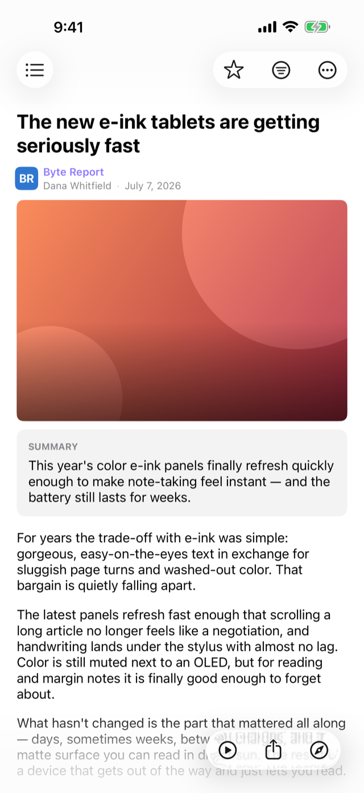
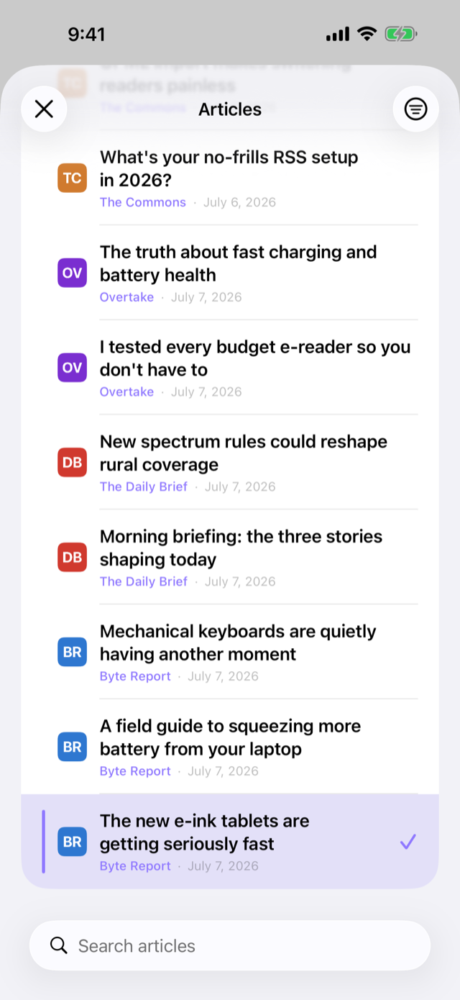
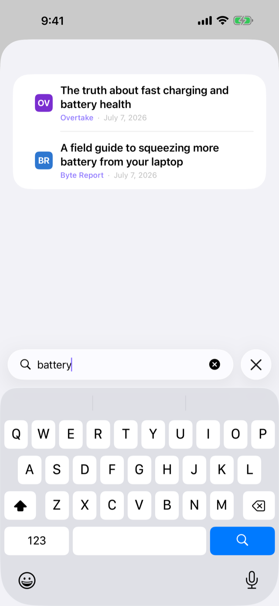
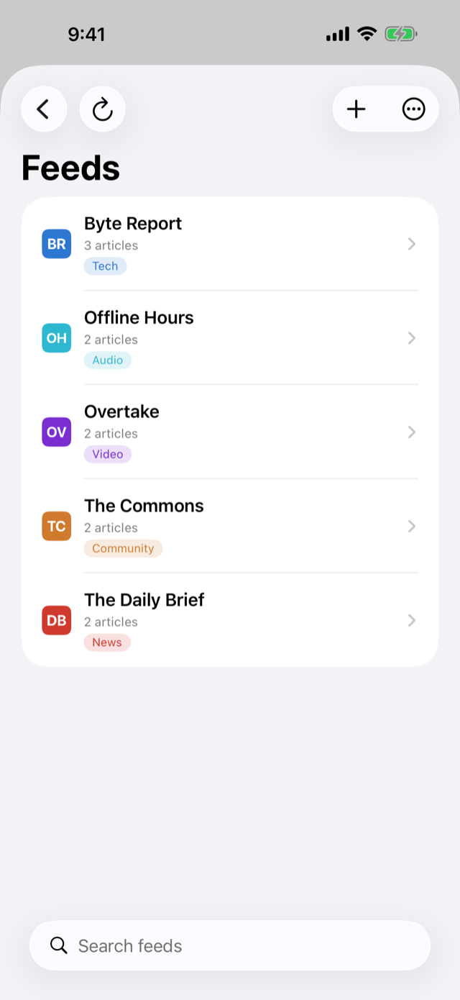

Private feed reader for iOS Privater Feed-Reader für iOS
All your reading in one place, on your phone, and nowhere else. Die gesamte Lektüre an einem Ort: auf dem Telefon und sonst nirgends.
Yana fetches, cleans up, and stores your feeds entirely on your device. No account, no login, no server — RSS, YouTube, Reddit, podcasts and a growing list of hand-tuned sources, all in one fast, native reader. Yana holt, bereinigt und speichert die Feeds komplett auf dem Gerät. Kein Konto, kein Login, kein Server — RSS, YouTube, Reddit, Podcasts und eine wachsende Liste handgepflegter Quellen, alles in einem schnellen, nativen Reader.

What it doesWas es kann
Most feed readers stop at RSS. Yana goes further. Die meisten Feed-Reader hören bei RSS auf. Yana geht weiter.
You point Yana at what you want to read; it does the fetching, parsing, and cleanup for you — and turns everything into one consistent, fast article format. Einfach angeben, was gelesen werden soll — Yana übernimmt Abruf, Parsen und Aufbereitung und bringt alles in ein einheitliches, schnelles Artikelformat.
Beyond RSSMehr als RSS
Ready-made aggregators pull in sites that never offered a proper feed: YouTube channels, Reddit communities, podcasts, and hand-tuned sources like heise, Tagesschau, Merkur, MeinMMO, Caschys Blog and MacTechNews. Fertige Aggregatoren holen auch Inhalte von Seiten ohne ordentlichen Feed: YouTube-Kanäle, Reddit-Communities, Podcasts und handgepflegte Quellen wie heise, Tagesschau, Merkur, MeinMMO, Caschys Blog und MacTechNews.
Fast, native readerSchneller, nativer Reader
No web view spinning up, no messy page rendering. Articles open instantly, scroll smoothly, and behave like they belong to the app — because they do. Open Yana and land straight in your timeline. Keine Webansicht im Hintergrund, keine überladene Seite. Artikel öffnen sofort, scrollen flüssig und gehören zur App. Nach dem Öffnen geht es direkt in die Timeline.
Ready offlineOffline bereit
Yana stores the finished article, not just a link, so the full text and images already live on your phone. On a train, a plane, or with no signal — it's right there, no loading spinner. Yana speichert den fertigen Artikel, nicht nur einen Link — Text und Bilder liegen bereits auf dem Telefon. Im Zug, im Flugzeug oder ohne Empfang ist alles sofort da.
Smarter reading with AIKlüger lesen mit KI
Turn on built-in Apple Intelligence for on-device summaries, translation, and cleanup — or bring your own key for OpenAI, Anthropic, Gemini, Mistral, Qwen, or DeepSeek. You decide which model touches your articles. Die integrierte Apple Intelligence liefert Zusammenfassungen, Übersetzung und Aufbereitung auf dem Gerät — oder den eigenen Schlüssel für OpenAI, Anthropic, Gemini, Mistral, Qwen oder DeepSeek mitbringen.
Read aloudVorlesen
Yana reads any article out loud in a voice that matches its language — a German piece gets a German voice. Start it, pocket the phone, and keep going from the lock screen. Yana liest jeden Artikel vor, mit einer Stimme, die zur Sprache des Textes passt. Starten, das Telefon einstecken und über den Sperrbildschirm weiterhören.
Tags & endless timelineTags & endlose Timeline
Tag your feeds, then filter the timeline by tag with a tap. Star anything worth keeping and it stays safe from cleanup. One endless stream, ordered by arrival — and Yana always remembers where you left off. Feeds mit Tags versehen und die Timeline per Tipp filtern. Aufhebenswertes mit Stern markieren, dann bleibt es verschont. Ein endloser Stream nach Eingang — Yana merkt sich die letzte Stelle.
Private by designPrivat von Grund auf
No account. No login. No server. Nothing about what you read ever leaves your device — unless you choose an outside AI provider yourself. Keys are stored in the Keychain. Kein Konto. Kein Login. Kein Server. Nichts vom Gelesenen verlässt das Gerät — außer bei bewusst gewähltem externem KI-Anbieter. Schlüssel liegen im Schlüsselbund.
OPML, search & moreOPML, Suche & mehr
Import and export subscriptions as OPML, search everything by title, text, author, or source, and let optional background refresh quietly pull in new articles. Old articles clean up after about a month; starred ones stay. Abos als OPML importieren und exportieren, alles nach Titel, Text, Autor oder Quelle durchsuchen und optional im Hintergrund aktualisieren. Alte Artikel werden nach etwa einem Monat aufgeräumt, markierte bleiben.
A look insideEin Blick hinein
Built for readingFürs Lesen gemacht



Free & open sourceKostenlos & quelloffen
Read every line of codeJede Zeile Code einsehbar
Yana is free and open source under the MIT License. You can see exactly what the app does with your data, follow along, or pitch in. Want a new source added or hit a bug? The issue board is open too — the built-in source list grows from what people actually ask for. Yana ist kostenlos und quelloffen unter der MIT-Lizenz. Genau nachvollziehbar, was die App mit den Daten tut — Mitmachen erwünscht. Eine neue Quelle gewünscht oder ein Fehler gefunden? Das Issue-Board ist offen, und die integrierte Quellenliste wächst mit den Wünschen der Nutzer.
A big thank you to the NetNewsWire team, whose clean, readable reader view shaped how articles look and feel in Yana. Ein großes Dankeschön an das NetNewsWire-Team, dessen aufgeräumte Leseansicht geprägt hat, wie sich Artikel in Yana anfühlen.